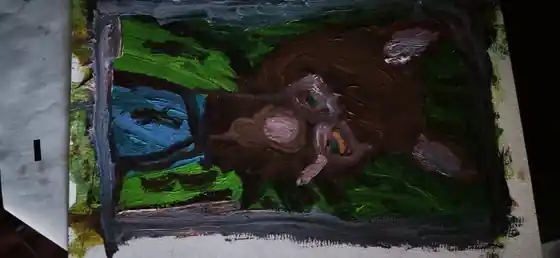

Lire la peinture.
Construire le volume.
Une lecture pratique de ta peinture, à partir de la composition d'origine. Passe de l'observation à un modelé réaliste sans perdre le geste pictural.

Image d'aperçu compressée, non retouchée dans sa composition. Les filtres affectent seulement l'affichage.
Grille de progression
Ajuste les notes selon ton propre regard ; elles restent dans cette page jusqu'à l'export. Ce sont des repères, pas une mesure objective du talent.
Couleurs et matière
Vert végétal
Bleu profond
Brun terre
Mauve sombre
Anthracite
Teintes indicatives issues de petits échantillons de la photographie, influencées par l'éclairage.
Un exercice, six étapes
- Définir une lumière unique venant du haut-gauche.
- Identifier sur le sujet la zone claire, la demi-teinte et l'ombre.
- Modeler joue et front avec des transitions progressives.
- Ajouter des ombres de contact, surtout sous le museau.
- Poser de petites touches claires sur les arêtes visibles.
- Observer de loin, puis passer en « Valeurs » pour vérifier le relief.
Objectif : obtenir un visage mieux lisible en trois valeurs sans changer ses proportions.
Auto-évaluation : à deux mètres, distingue-t-on instantanément lumière, volume et direction du regard ?